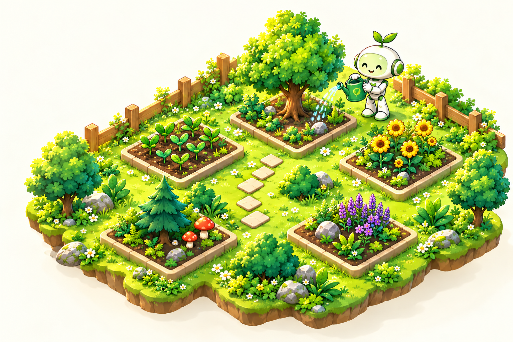

YOUR LIVING PROGRESS
My Garden
Your progress grows here.
Nurture good habits, complete tasks, and grow a better you — one step at a time.KEEP THE MOMENTUM
Explore your training activities
Short, effective activities to help you make real progress.